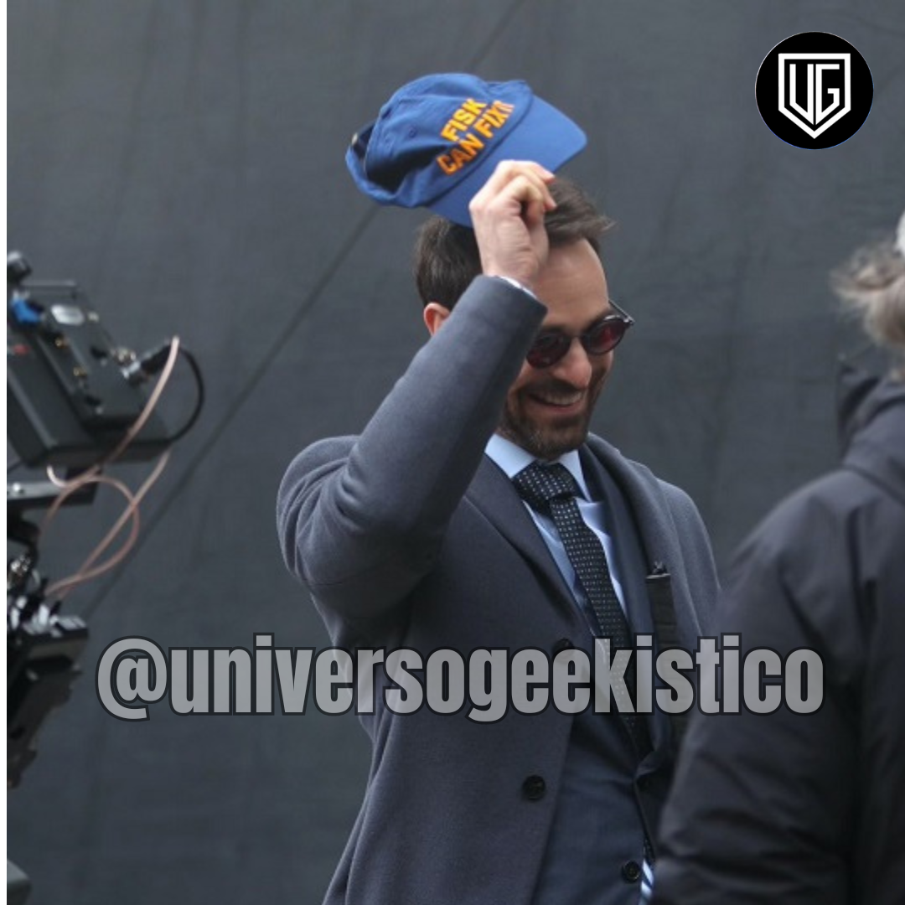
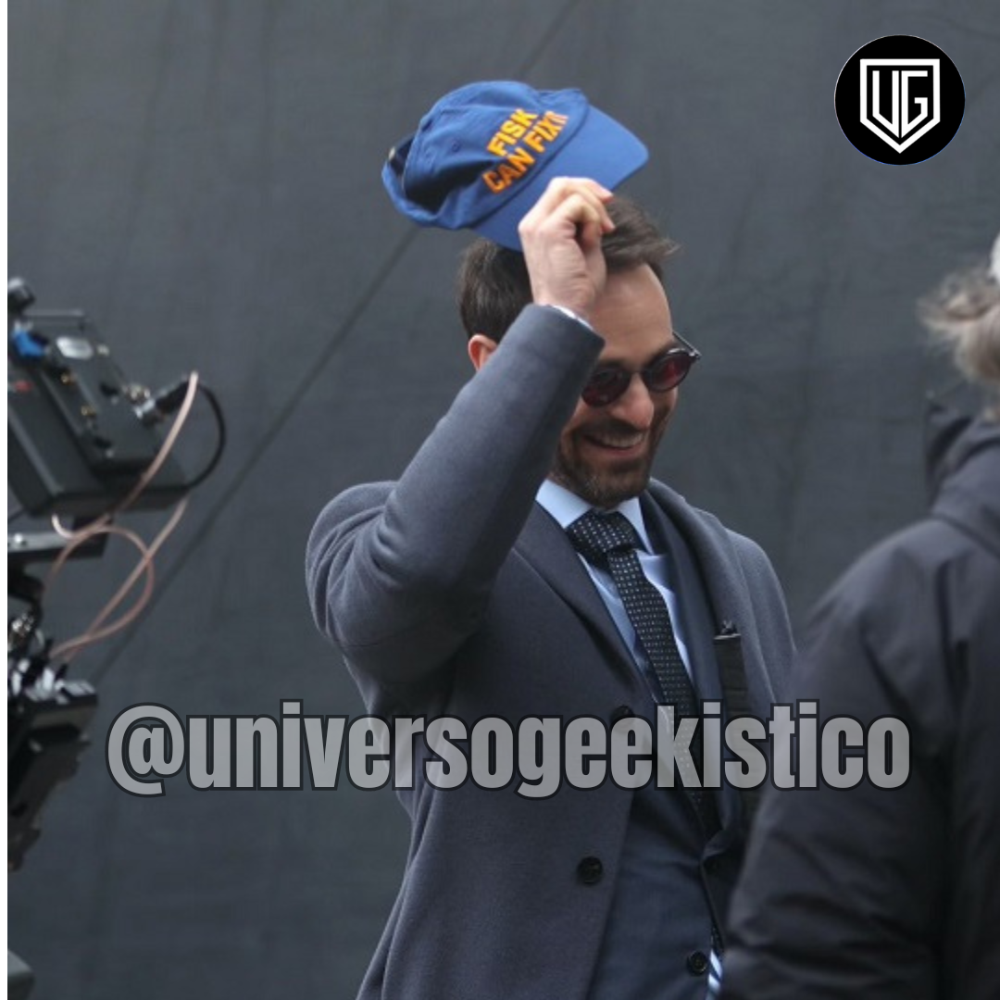

Universo Geekistico
Universo Geekistico


 Universo Geekistico
Universo Geekistico

A kryptonita é um artefato tão importante na história do Superman que se tornou uma metáfora icônica na cultura pop, um sinônimo de fraqueza, mas aconteceu algo nos quadrinhos que revolucionou essa noção...

Se você é fã do deus da mentira e espera notícias sobre a terceira temporada de Loki no streaming, então você está no lugar certo. Já adianto que o roteirista principal da série do MCU, Eric Martin, revelou...
Os Eternos chegaram como uma grande promessa para a Fase 4 do MCU. Infelizmente, a equipe de seres poderosos não virou unanimidade e trouxe um dos filmes mais AME-OU-ODEIE da história...
 
